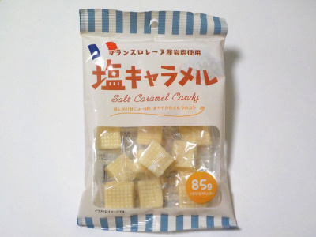

宮田製菓のフランスロレーヌ産岩塩使用「塩キャラメル」
2022/10/17

久しぶりにキャラメルを食べました。名前に「塩」って付くだけあって、甘いだけじゃない美味しさがありました。
ちょっと大きめだし硬さもあるので、食べる時間がちょっと長かったです。美味しい時間が長持ちするのはいいですね。
岐阜県各務原市鵜沼各務原町7丁目71番6
2022/10/17

久しぶりにキャラメルを食べました。名前に「塩」って付くだけあって、甘いだけじゃない美味しさがありました。
ちょっと大きめだし硬さもあるので、食べる時間がちょっと長かったです。美味しい時間が長持ちするのはいいですね。